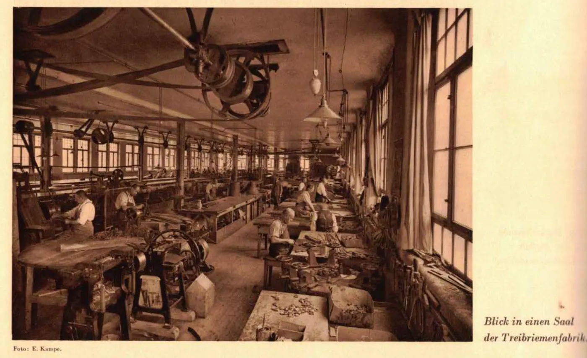
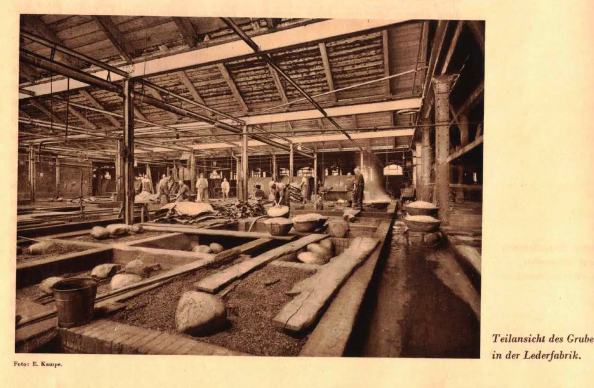
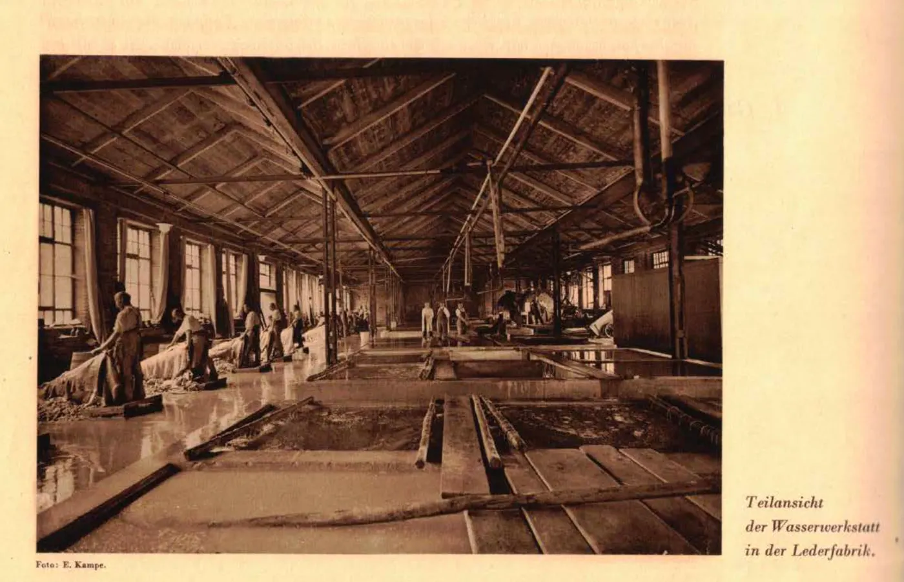
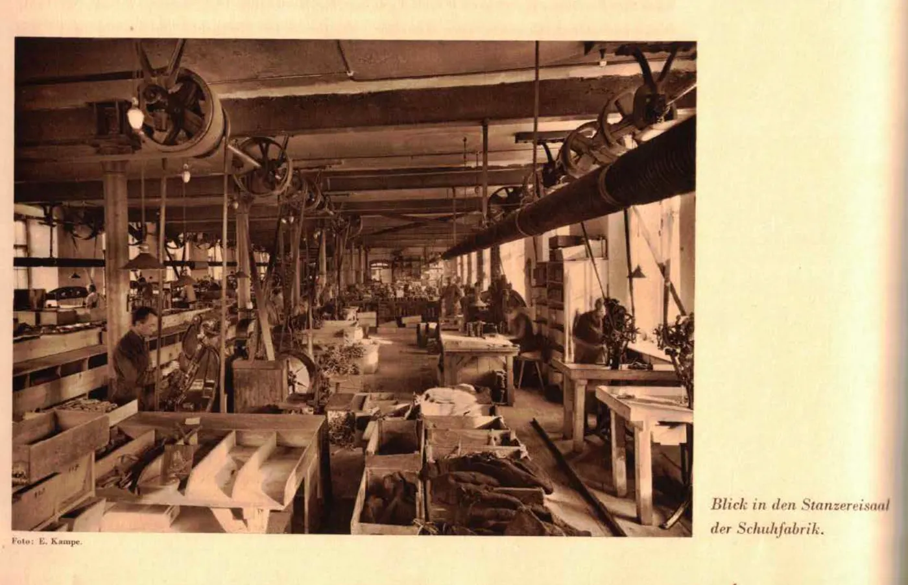

Gebrüder Krafft: von der Rotgerberei zur Lederwarenfabrik
Die Jubiläumsschrift von 1929 und der technische Lederkatalog von 1913 zeigen, wie aus einer wiedereröffneten Rotgerberei ein Unternehmen mit unterschiedlichen Lederqualitäten und Produkten wurde.
1773 und 1854
Johann Nikolaus Flury betrieb 1773 eine Rotgerberei mit Gerbhaus, Gruben und später einem Trockenraum. Wilhelm Krafft nahm die etwa vier Jahrzehnte stillgelegte Anlage 1854 wieder in Betrieb.
Quelle: Jubiläumsschrift 1854–1929, S. 4 und 6 (PDF-Seiten 4 und 6).
Die ersten Lederarten
In den ersten Jahren wurde insbesondere Wichskalbleder gefertigt und nach Amerika exportiert. Später verlagerte sich der Schwerpunkt auf Sohlleder, Oberleder und Riemenleder.
Quelle: Jubiläumsschrift 1929, S. 10 (PDF-Seite 10).
Ein Betrieb, viele Anforderungen
Der Katalog von 1913 führt Riemen-Kerntafeln, Sohlleder-Kerntafeln, Manschons-Leder in Chromgerbung, Treibriemen, Manschetten, Lederschnüre und Webervögel auf.
Quelle: Preisliste für technische Leder und Lederwaren, 1913, S. 10–24.
Was noch offen bleibt
Die Unterlagen belegen das Sortiment und einzelne Lederbezeichnungen. Sie beweisen noch nicht, dass jede Sorte ausschliesslich in der eigenen Gerberei hergestellt oder jede Haut vollständig im eigenen Betrieb verwertet wurde.
Historische Betriebsaufnahmen

Saal der Treibriemenfabrik. Historische Aufnahme, Foto: E. Kampe. Datierung und ursprüngliche Publikation noch ergänzen.

Grubensaal der Lederfabrik. Historische Aufnahme, Foto: E. Kampe. Datierung und ursprüngliche Publikation noch ergänzen.

Wasserwerkstatt der Lederfabrik. Historische Aufnahme, Foto: E. Kampe. Datierung und ursprüngliche Publikation noch ergänzen.

Stanzereisaal der Schuhfabrik. Historische Aufnahme, Foto: E. Kampe. Datierung und ursprüngliche Publikation noch ergänzen.
Die firmeneigene Jubiläumsschrift von 1929 beschreibt, wie sich der Gerbereibetrieb vom langsamen pflanzlichen Gerben zu mehreren spezialisierten Verfahren entwickelte. Entscheidend war, welche Eigenschaften das fertige Leder besitzen sollte.
Technische Entwicklung im Überblick
Zeit
Verfahren / Entwicklung
Wofür und mit welcher Einschränkung?
Ab 1854
Traditionelle Rot- und Grubengerbung mit Gerbrinden und weiteren pflanzlichen Gerbmaterialien
Langsame Herstellung unterschiedlicher Lederqualitäten; die Grubengerbung blieb später besonders für Sohlen- und Riemenleder wichtig.
1869
Crownleder-Fabrikation: Behandlung mit Fetten, Mehl und Salz; später Varianten mit pflanzlicher Vorgerbung
Zähes Leder für Schlagriemen an Webstühlen sowie Näh- und Binderriemen. Nicht mit gewöhnlichem Schuhoberleder gleichzusetzen.
1882
Erste Fassgerbversuche mit schwachen Brühen und Eichenlohe
Laut Jubiläumsschrift zunächst nicht zufriedenstellend; Krafft blieb vorerst beim bewährten Verfahren.
Anfang der 1890er-Jahre
Erneute Fassgerbung mit stärkeren Gerbextrakten
Günstigere Ergebnisse; Einsatz für bestimmte leichtere Ledersorten, nicht als vollständiger Ersatz der Gruben.
1896
Einführung der Chromgerbung
Nach der Jubiläumsschrift besonders geeignet für Schlagriemen-, Nähriemen- und Schuhoberleder.
Grube und Fass: unterschiedliche Aufgaben
Die rotierenden Fässer verkürzten die Gerbdauer. Dennoch hielt Krafft ausdrücklich in grösserem Umfang an der Grubengerbung fest, vor allem für Sohlen- und Riemenleder. Die Verfahren bestanden also nebeneinander, weil die Produkte unterschiedliche Materialeigenschaften verlangten.
Grubensaal der Lederfabrik Krafft, historische Betriebsaufnahme, Foto E. Kampe, veröffentlicht in der Jubiläumsschrift von 1929.
Fassgerbung und Chromgerbung unterscheiden
Eine Trommel bezeichnet die Art der Bewegung und Behandlung der Häute; Chromgerbung bezeichnet das chemische Gerbmittel. Auch pflanzliche Gerbbrühen konnten in rotierenden Fässern verwendet werden. Die Quelle beschreibt diese Entwicklungen getrennt.
Vom Rohstoff zum Absatzmarkt
Die Jubiläumsschrift macht deutlich, dass Krafft nicht nur fertige Waren verkaufte, sondern verschiedene Häute und Gerbmaterialien beschaffte, unterschiedliche Lederqualitäten herstellte und diese selbst verarbeitete oder absetzte. Nicht jede Herkunft und jeder Absatzweg ist allerdings vollständig dokumentiert.
Rohstoffe und Beschaffung
Rohstoff
Historischer Nachweis
Was offenbleibt
Kalbfelle
Ein Brief vom Februar 1855 nennt bis zu 200 eingearbeitete Kalbfelle pro Woche.
Konkrete Herkunftsorte und Lieferanten dieser Felle.
Kipse
Die Jubiläumsschrift nennt Häute indischer Herkunft, die für die Schuhfabrikation verwendet wurden.
Lieferfirmen, genaue Transportwege und einzelne Beschaffungsjahre.
Wildhäute
Ein Brief von 1854 erwähnt Häute, die aus Kalkutta kommen sollten; der Wortlaut ist eine zeitgenössische Vermutung.
Ob die erwähnte Lieferung tatsächlich erfolgte.
Gerbrinden und Lohe
Pflanzliche Gerbmaterialien, darunter Eichenlohe; die Schrift nennt zusätzlich ausländische pflanzliche Gerbstoffe.
Exakte Lieferländer und Mengen.
Verarbeitung und Sortimentsbildung
Die Rohhäute durchliefen je nach gewünschtem Produkt unterschiedliche Gerb- und Zurichtungsverfahren. Belegt sind bei Krafft traditionelle Grubengerbung, Crownleder-Herstellung ab 1869, Versuche und späterer Einsatz der Fassgerbung sowie Chromgerbung ab 1896. Die Verfahren im Detail →
Absatz und Produkte
Produkt
Belegter Absatz / Verwendung
Wichskalbleder
In den ersten Jahren Export nach Amerika; später Aufgabe dieses Schwerpunkts wegen Absatzschwankungen und Kapitalbindung.
Sohlen- und Oberleder
Nach der Jubiläumsschrift zunächst auch im eigenen Einzelhandel verkauft.
Riemenleder und Crownleder
Unter anderem für Maschinenriemen, Schlagriemen an Webstühlen, Näh- und Binderriemen.
Schuhleder
Ab 1886 Herstellung von Lederschuhen in einem eigenen Produktionszweig.
Grenzen der Überlieferung
Die Angaben zeigen internationale Rohstoffbezüge und einen frühen Export nach Amerika. Sie erlauben jedoch keine lückenlose Weltkarte aller Zulieferer und Absatzmärkte. Auch lässt sich daraus nicht ableiten, dass jede Haut vollständig im eigenen Betrieb verwertet wurde.
Gebrüder Krafft, 75 Jahre Gebrüder Krafft, Leder- und Lederwarenfabrik Fahrnau (Baden), 1854–1929, zusammengestellt von Dr. R. Nutzinger, 1929, besonders Abschnitt „Gerberei und Lederfabrikation“ sowie Gründungsgeschichte.
Lederqualitäten im Katalog von 1913
Produkt / Bezeichnung
Beleg und Bedeutung
Riemen-Kerntafeln (Croupons)
Katalog S. 10: ausdrücklich als Riemenleder angeboten.
Sohlleder-Kerntafeln (Croupons)
Katalog S. 11: andere Produktgruppe für Sohlenleder.
Manschons-Leder
Katalog S. 11: ausdrücklich in Chromgerbung angeboten.
Einfache und doppelte Treibriemen
Katalog S. 12–15: für mechanische Kraftübertragung.
Manschetten und Dichtungen
Katalog S. 18–19: für Pumpen, Pressen und Kolben.
Webervögel / Pickers
Katalog S. 24: Lederbauteile für Webstühle.
Was sich aus dem Katalog ableiten lässt
Die zeitgenössischen Quellen belegen unterschiedliche Lederarten und ein breites technisches Sortiment. Sie stützen die These, dass die Verbindung von Gerberei und Verarbeitung ein wichtiger betrieblicher Vorteil sein konnte. Ein lückenloser Materialfluss von einer einzelnen Rohhaut bis zu jedem Krafft-Produkt ist damit nicht belegt.